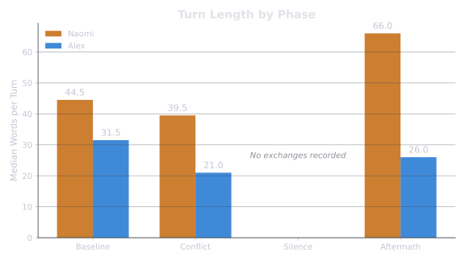
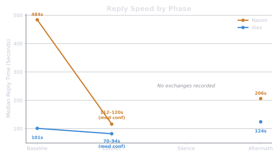
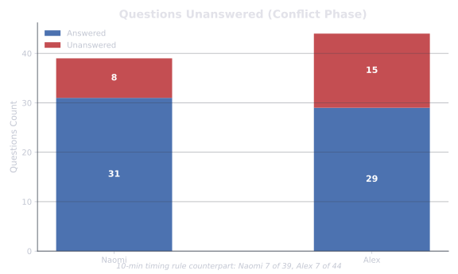

A unified view combining interactive insights with evidence-based data visualizations.
One of us tends to say more per turn; the other says it in shorter bursts, with rare long exceptions.

It often looks like two different settings running at once: length building on one side, and on the other a typical turn that shrinks by about a third going into the Conflict and never comes back up. Averages hide this — by the mean, Alex’s output looks flat across all three windows, because a handful of very long turns hold the average up over a much shorter floor.
After the conflict, one of us got much faster to reply. The other stayed roughly where he already was.

The larger movement here is not that one person is faster — that was already true. It’s that roughly eight minutes became roughly two. A change that size is consistent with the channel becoming something checked rather than answered on your own clock. Whatever else the conflict involved, one visible cost is the ability to put the phone down.
Both of us ask a great many questions. A lot of them don’t get answered directly — on both sides.

On this measure, neither person is the one who won’t engage. Both are present at high volume and neither is answering. One exchange holds the whole shape: "How am I gaslighting me? Tell me how. Explain to me how." met with "No, but can you just answer my questions from earlier?" — each declining on the grounds that the other declined first.